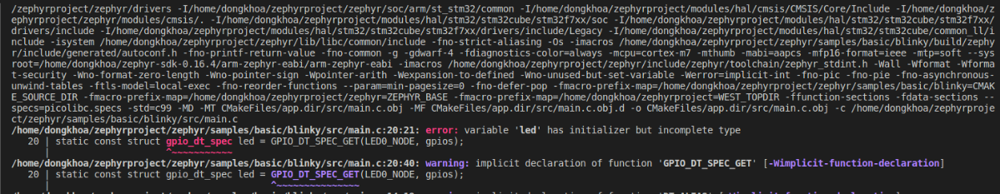
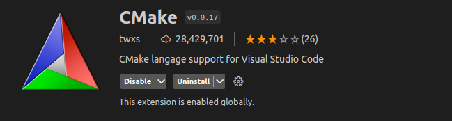
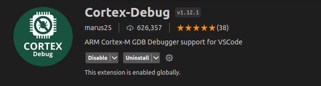
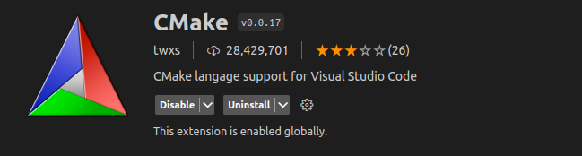
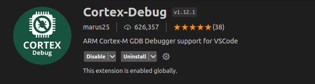
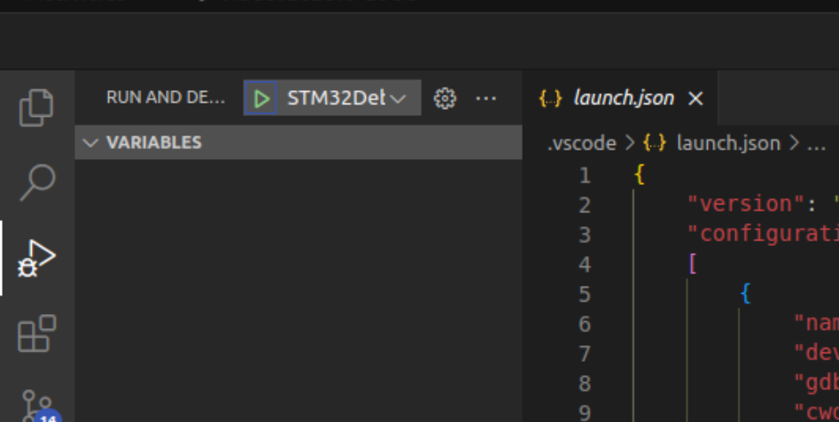

MỘT SỐ HƯỞNG DẪN VỀ ZEPHYR PROJECT - ZEPHYR OS
Yêu cầu về phần cứng
Ubuntu version từ 20 trở lên (khuyến nghị cài dual boot nếu sài máy áo có thể bị lỗi khi flash vào chip).
Ổ cứng cấp phát cho ubuntu trên 20GB.
Board sử dụng là STM32F746G_Disco.
Các bước cài đặt
Ghi chú
Lưu ý trước khi cài đặt là đảm bảo mạng kết nối luôn ổn định và máy tính không được mất điện giữa lúc cài (đây là ubuntu nên cái gì cũng có thể đi luôn cái ubuntu)
Bước 1: Cài đặt các tool phụ thuộc (CMake, Python, Devicetree compiler)
Sử dụng
aptđể cài đặt các tool:
sudo apt install --no-install-recommends git cmake ninja-build gperf \
ccache dfu-util device-tree-compiler wget \
python3-dev python3-pip python3-setuptools python3-tk python3-wheel xz-utils file \
make gcc gcc-multilib g++-multilib libsdl2-dev libmagic1
Check lại xem đã cài được chưa:
cmake --version
python3 --version
dtc --version
Kết quả:
Bước 2: Cài môi trường ảo và zephyr project
Sử dụng
aptđể cài góivenvcủa Python:
sudo apt install python3-venv
Tạo môi trường ảo:
python3 -m venv ~/zephyrproject/.venv
Activate môi trường ảo:
source ~/zephyrproject/.venv/bin/activate
Ghi chú
Lưu ý: mỗi khi muốn build hoặc flash zephyr project đều phải sử dụng lệnh này.
Cài đặt
west:
pip install west
Get source code của Zephyr:
west init ~/zephyrproject
cd ~/zephyrproject
west update
Ghi chú
Lưu ý: đây là nguồn để học về các hàm sử dụng trong zephyr rất hiệu quả nên hãy cố gắng khai thác hết mức có thể.
Export Zephyr CMake package:
west zephyr-export
Cài đặt các requirement:
pip install -r ~/zephyrproject/zephyr/scripts/requirements.txt
Bước 3: Cài Zephyr SDK
Tải và verify Zephyr SDK:
cd ~
wget https://github.com/zephyrproject-rtos/sdk-ng/releases/download/v0.16.4/zephyr-sdk-0.16.4_linux-x86_64.tar.xz
wget -O - https://github.com/zephyrproject-rtos/sdk-ng/releases/download/v0.16.4/sha256.sum | shasum --check --ignore-missing
Giải nén tệp vừa tải:
tar xvf zephyr-sdk-0.16.4_linux-x86_64.tar.xz
Cài đặt Zephyr SDK:
cd zephyr-sdk-0.16.4
./setup.sh
Bước 4: Build một project sample
Chọn một project sample:
cd ~
cd ./zephyrproject/zephyr/samples/basic/blinky
Chọn Board để build:
Các board mà zephyr hổ trở: Supported Boards.
west build -p always -b <your-board-name>
Nếu bạn thêm lệnh set(BOARD <your-board-name>) trong file CMakeLists.txt trong project thì chỉ cần ghi: west build
Nếu như bạn gặp lỗi:
Hãy truy cập vào thư mục đó rồi chỉnh sửa file main.c như sau: (Lưu ý sau khi thay đổi file main.c hãy xóa thư mục build trong project đó hãy build lại)
#include <stdio.h>
#include <zephyr/kernel.h>
#include <zephyr/drivers/gpio.h>
/* 1000 msec = 1 sec */
#define SLEEP_TIME_MS 1000
/* The devicetree node identifier for the "led0" alias. */
#define LED0_NODE DT_ALIAS(led0)
static const struct gpio_dt_spec led = GPIO_DT_SPEC_GET(LED0_NODE, gpios);
int main(void)
{
int ret;
bool led_state = true;
if (!gpio_is_ready_dt(&led)) {
return 0;
}
ret = gpio_pin_configure_dt(&led, GPIO_OUTPUT_ACTIVE);
if (ret < 0) {
return 0;
}
while (1) {
ret = gpio_pin_toggle_dt(&led);
if (ret < 0) {
return 0;
}
led_state = !led_state;
printf("LED state: %s\n", led_state ? "ON" : "OFF");
k_msleep(SLEEP_TIME_MS);
}
return 0;
}
Cấu trúc về Zephyr Project
Bước 1: Khởi tạo workspace folder (my-workspace)
Ghi chú
Trước khi khởi tạo workspace folder hãy active virtual environment (Bước 2: Cài môi trường ảo và zephyr project).
Dung lượng nơi lưu trử > 1GB.
Chạy command như sau:
# initialize my-workspace for the example-application (main branch)
west init -m https://github.com/zephyrproject-rtos/example-application --mr main my-workspace
Bước 2: Chỉnh sửa lại file set up thư viện cho project
Mở thư mục file
my-workspace/west.yml. Mặc định nó sẽ như sau:
# Copyright (c) 2021 Nordic Semiconductor ASA
# SPDX-License-Identifier: Apache-2.0
manifest:
self:
west-commands: scripts/west-commands.yml
remotes:
- name: zephyrproject-rtos
url-base: https://github.com/zephyrproject-rtos
projects:
- name: zephyr
remote: zephyrproject-rtos
revision: main
import:
# By using name-allowlist we can clone only the modules that are
# strictly needed by the application.
name-allowlist:
- cmsis # required by the ARM port
- hal_nordic # required by the custom_plank board (Nordic based)
- hal_stm32 # required by the nucleo_f302r8 board (STM32 based)
Do ở đẩy sử dụng board STM32F746G_Disco, Nên chỉ cần
cmsisvàhal_stm32=> xóahal_nordic(dùng cho board nrf).
Bước 3: Update thư viện cho project và build, flash trong project
Chạy command sau:
# update Zephyr modules
cd my-workspace
west update
Vào project có trong workspace:
cd ./example-application
Ghi chú
Đây là project mẫu không dành cho tất cả các board, thay đổi lại code bên trong theo project của mình, có thể xóa những folder không cần trong project.
Build Project:
west build -b $BOARD app
Flash vào chip:
west flash
Bước 3: Giải thích các folder chính có trong project
boards: Chứa các file config dành cho board mà zephyr không hổ trợ sẳn.drivers: Viết thư viện dành cho các driver chứa có thư viện như button...dts: Viết device tree cho chip mà zephyr không hổ trợ sẳninclude: Chứa các file headerlib: Chứa các file .capp: Chứa file main.c. folder này có chức năng chính dùng để build project (do có file CMakeLists.txt để liên kết với các thư viện của zephyr).
Guiconfig
Thay vì bạn sử dụng file pri.conf để config các ngoại vi, chức năng trên zephyr thì bạn có thể dùng gui.
Sử dụng lệnh:
west build -t guiconfig
Debug cho ARM [STM32]sử dụng OpenOCD + VSCODE
Bước 1: Cài đặt openocd
Đầu tiên hãy kiểm tra xem máy tính đã có openOCD hay chưa: mở termial và gõ lệnh sau:
openocd
Nếu màn hình terminal như sau thì máy bạn đã có (bỏ qua bước cài đặt):
Nếu không xuất hiện màn hình như trên thì cài openOCD:
sudo apt update
sudo apt upgrade
git clone https://github.com/openocd-org/openocd.git
cd openocd
./bootstrap
./configure -–prefix=/usr/local –enable-ftdi –enable-stlink
make
sudo make install
Tìm đường dẫn đến openocde lưu trong máy:
which openocd
Tham khảo cách cài đặt: OPENOCD.
Bước 2: Cài đặt các extension trong vscode
 



Bước 3: Thêm các file json để debug được trên vscode
Thêm một thư mục .vscode gồm có hai file setting.json và launch.json
Lưu ý đổi thành đúng tên user mà máy tính các bạn đã cài đặt trên máy.
Nội dung file setting.json
{
"terminal.integrated.env.windows":
{
"PATH": "/home/dongkhoa/zephyrproject/zephyr/scripts;${env:PATH}",
"ZEPHYR_BASE": "/home/dongkhoa/zephyrprojec/zephyr"
}
}
Nội dung file launch.json
{
"version": "0.2.0",
"configurations":
[
{
"name": "STM32Debug",
"device": "STM32F746G_Disco",
"gdbPath": "/home/dongkhoa/zephyr-sdk-0.16.4/arm-zephyr-eabi/bin/arm-zephyr-eabi-gdb",
"cwd": "${workspaceFolder}",
"executable": "${workspaceFolder}/build/zephyr/zephyr.elf",
"request": "launch",
"type": "cortex-debug",
"servertype": "openocd",
"interface": "swd",
"configFiles":["/home/dongkhoa/zephyrproject/zephyr/boards/arm/stm32f746g_disco/support/openocd.cfg"],
"runToEntryPoint": "main",
"postRestartCommands": [
"break main",
"continune"
]
}
]
}
Bước 4: Debug
Chọn vào nút màu xanh để bắt đầu debug
